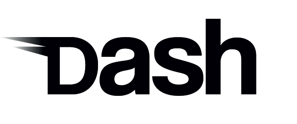
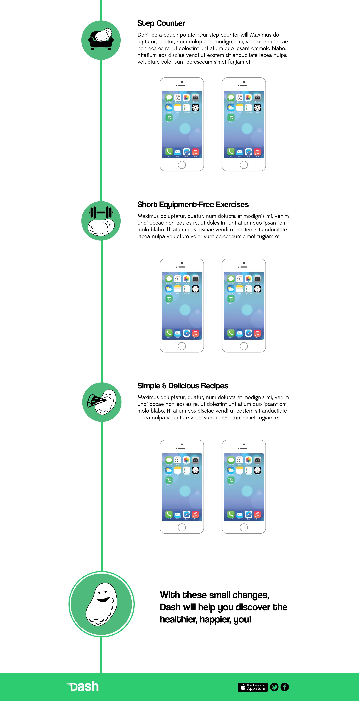

This was a design I did as a one day project during a web design course. The brief I was given was that “Dash” was an app which “helps you monitor your daily activity. Physical exertion is great for your health and can improve the way you look and feel. Dash encourages you to change a few of your habits and discover the healthier, happier you.”.
The website was to be a “one page promotional website” which should “clearly display Dash’s features with a light hearted, possibly humerous approach – depicting how every day tasks can lead to a healthier lifestyle”. The requirements of the website included: Dash logo, app visuals, social icons and app store link.
I designed the logo and the website. However, because there is no actual app, the app visuals section is missing. My design for the logo tried to incorporate the light hearted and playful elements of the app. I created the flat iPhone. The icon elements used were taken from thenounproject.com, but I put them together.
This was a project in design, and so there is no live site to view.
 